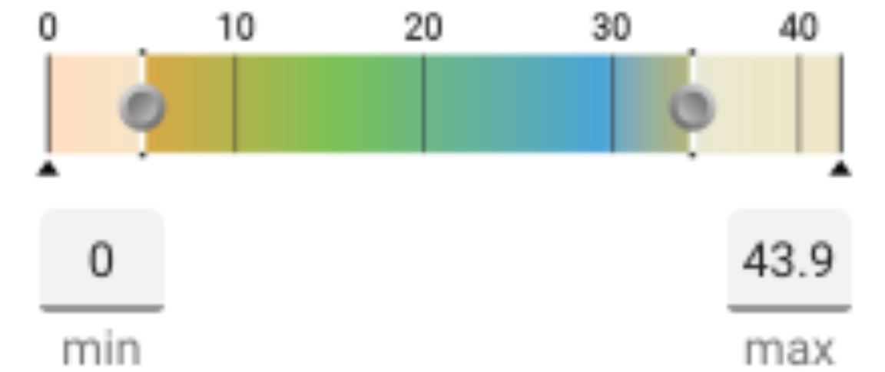

<mat-tab-group>
  <mat-tab label="Static">
    <h3>Front</h3>
    <mat-chip-list>
      <mat-chip *ngFor="let item of list" [ngStyle]="item" (click)="frontColor(item)">{{item.backgroundColor}}</mat-chip>
      <label for="Front">Custom Color
          <input type="color" name="Front" id="Front" (change)="customFront()" [(ngModel)]="cf">
        </label>
    </mat-chip-list>
    <h3>Back</h3>
    <mat-chip-list>
      <mat-chip *ngFor="let item of list" [ngStyle]="item" (click)="backColor(item)">{{item.backgroundColor}}</mat-chip>
      <label for="Back">Custom Color
        <input type="color" name="Back" id="Back" (change)="customBack()" [(ngModel)]="cb">
      </label>
    </mat-chip-list>
  </mat-tab>
  <mat-tab label="Data Driven">
    <mat-form-field>
      <mat-select placeholder="Data Sets">
        <mat-option>Set 1</mat-option>
        <mat-option>Set 2</mat-option>
        <mat-option>Set 3</mat-option>
        <mat-option>Set 4</mat-option>
      </mat-select>
    </mat-form-field>
    
  </mat-tab>
</mat-tab-group>
